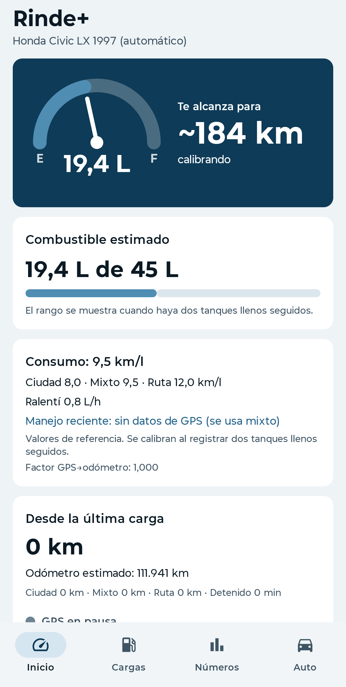
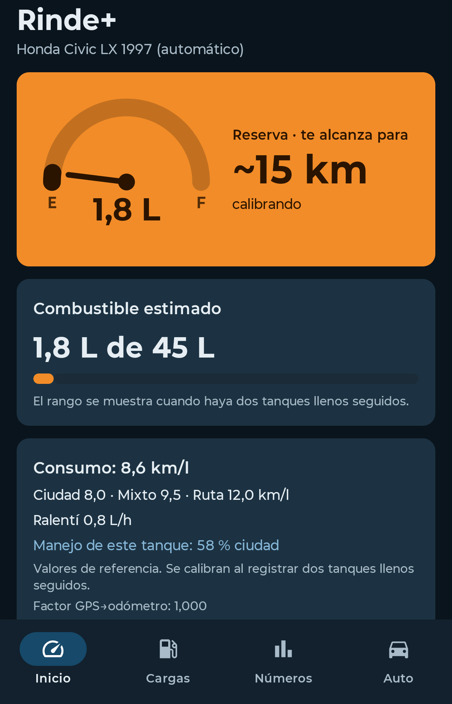

Sabé cuánta nafta te queda y cuántos km te alcanzan
Rinde+ es una app para Android y Android Auto pensada para autos sin computadora de a bordo: con tus cargas y el GPS del celular estima los litros que quedan en el tanque y la autonomía.
En prueba Por ahora se distribuye a un grupo chico de personas.

Qué hace
Litros y autonomía
Un medidor como el del tablero y los km que te alcanzan, con un rango probable cuando ya conoce tu consumo.
Aprende tu consumo
Con dos cargas de tanque lleno seguidas calcula tu consumo real, y distingue ciudad, mixto y ruta.
Android Auto
Los datos en la pantalla del auto, y el GPS arranca y para solo cuando conectás el celular.
Autos con GNC
Dos tanques (nafta y GNC), cada uno con su consumo, y la autonomía total.
Sin Android Auto
El GPS puede arrancar al conectarte al Bluetooth del auto, o con un botón.
Escaneo del surtidor
Una foto del surtidor completa litros, precio y total. Se lee en el celular, sin internet.
Tus datos son tuyos
La app funciona completa sin internet y sin cuenta. Si querés, podés iniciar sesión con Google para tener una copia de tus cargas en la nube. No hay publicidad ni se venden datos. Detalles en la política de privacidad.
